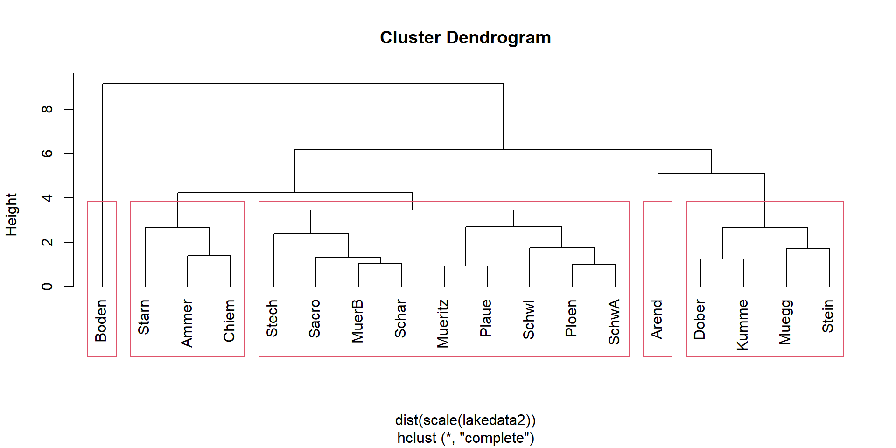
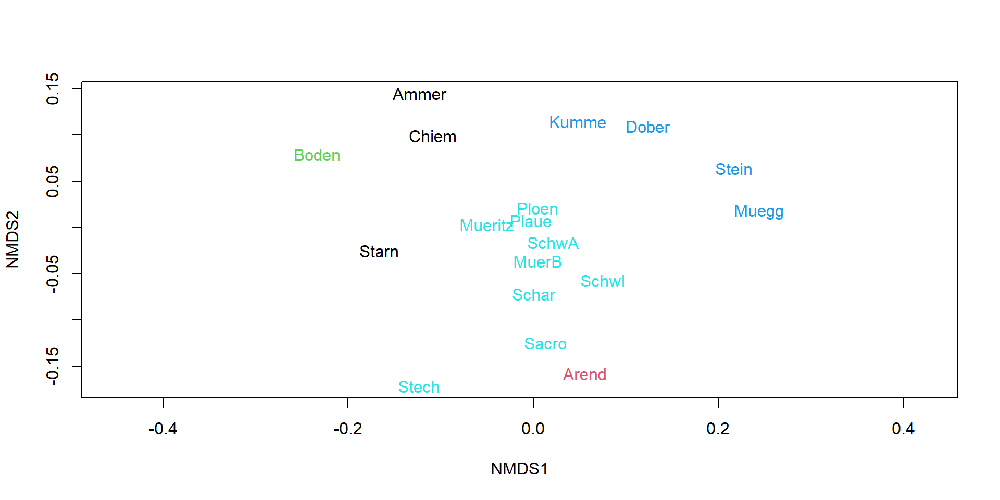

| Site | Mollusca | Diptera | Baetis | Plecoptera | Coleoptera | Turbellaria | Heptageniidae | Ephemeroptera | Gammarus | Trichoptera | Acari | Nematoda | Oligochaeta |
|---|---|---|---|---|---|---|---|---|---|---|---|---|---|
| GP9 | 3 | 165 | 91 | 14 | 6 | 3 | 9 | 136 | 256 | 45 | 6 | 0 | 11 |
| GR9 | 31 | 438 | 728 | 31 | 728 | 11 | 31 | 0 | 65 | 367 | 3 | 0 | 503 |
| TP9 | 0 | 26 | 3 | 20 | 9 | 0 | 3 | 20 | 119 | 40 | 0 | 0 | 23 |
| TR9 | 0 | 11 | 6 | 37 | 11 | 0 | 0 | 3 | 68 | 26 | 0 | 0 | 23 |
| GP8 | 23 | 913 | 31 | 14 | 3 | 9 | 6 | 26 | 901 | 37 | 3 | 20 | 0 |
| GR8 | 225 | 1066 | 310 | 199 | 461 | 48 | 91 | 23 | 688 | 600 | 26 | 0 | 284 |
| TP8 | 17 | 2204 | 54 | 117 | 11 | 0 | 11 | 20 | 2525 | 77 | 3 | 3 | 68 |
| TR8 | 3 | 520 | 74 | 762 | 125 | 20 | 65 | 0 | 668 | 173 | 3 | 0 | 267 |
| GP7 | 26 | 247 | 68 | 6 | 3 | 3 | 3 | 20 | 813 | 9 | 6 | 0 | 0 |
| GR7 | 117 | 509 | 290 | 63 | 191 | 6 | 26 | 11 | 682 | 117 | 60 | 9 | 131 |
| TP7 | 26 | 3477 | 17 | 28 | 0 | 0 | 3 | 37 | 2693 | 17 | 0 | 0 | 0 |
| TR7 | 48 | 429 | 57 | 412 | 97 | 9 | 63 | 9 | 808 | 102 | 26 | 6 | 57 |
| GP10 | 3 | 159 | 14 | 31 | 3 | 0 | 48 | 91 | 100 | 23 | 0 | 0 | 17 |
| GR10 | 0 | 68 | 191 | 26 | 51 | 3 | 253 | 0 | 80 | 233 | 3 | 0 | 11 |
| TP10 | 0 | 51 | 0 | 6 | 9 | 0 | 0 | 6 | 71 | 0 | 0 | 0 | 31 |
| TR10 | 0 | 28 | 6 | 40 | 14 | 0 | 0 | 0 | 40 | 54 | 0 | 0 | 0 |
11-Multivariate methods II
Applied Statistics – A Practical Course
Thomas Petzoldt
2023-11-19
Data sets and terms of use
The “UBA-lakes” data set originates from the public data repository of the German Umweltbundesamt (Umweltbundesamt, 2021). The data set provided can be used freely according to the terms and conditions published at the UBA web site, that refer to § 12a EGovG with respect of the data, and to the Creative Commons CC-BY ND International License 4.0 with respect to other objects directly created by UBA.
The “gauernitz” data set contains simplified teaching versions from research data, of the study from Winkelmann et al. (2011)
The document itself, the codes and the ebedded images are own work and can be shared according to CC BY 4.0.
Distance and similarity
Euclidean distance
- PCA works with Euclidean distance
- rule of Pythagoras
\[ a^2 + b^2 = c^2 \quad \Rightarrow\quad c = \sqrt{a^2 + b^2} = \sqrt{\Delta x^2 + \Delta y^2} \]
- but: Euclidean distance is not always the best option.
Distance and dissimilarity
Axiomatic definition
Measure of distance \(d\) between multidimensional points \(x_i\) and \(x_j\):
- \(d(x_i, x_j) \ge 0\), distances are similar or equal to zero
- \(d(x_i, x_j)=d(x_j,x_i)\), the distance from A to B is the same as from B to A,
- \(d(x_i, x_i)=0\), the distance from a given point to itself is zero
A distance measure is termed metric, if:
- \(d=0\) applies in the case of equality only, and
- the triangle inequality aapplies.
The indirect route is longer than the direct route
If one or both of the additional conditions are violated, we speak about nonmetric measures and use the term dissimilarity instead of distance.
Similarity
A measure of similarity \(s\) can be defined in a similar way:
- \(s(x_i,x_j) \le s_{max}\)
- \(s(x_i,x_j)=s(x_j,x_i)\)
- \(s(x_i,x_i)=s_{max}\)
it is metric, if:
- \(s_{max}\) applies only in the case of equality and
- the triangle inequality applies
Conversion between dissimilarity and similarity
| similarity | dissimilarity |
|---|---|
| \(s=1-d/d_{max}\) | \(d=1-s/s_{max}\) |
| \(s=\exp(-d)\) | \(d= - \ln(s-s_{min})\) |
- distance goes from \(0\) to \(\infty\)
- different transformations, as long as the \(\Rightarrow\) transformation is monotonic
- in most cases similarity \(s\) is limited between \((0, 1)\) or between 0 and 100%.
Common distance and dissimilarity measures
- Euclidean distance: shortest connection between 2 points in space
- Manhattan distance: around the corner, as in Manhattans grid-like streets
- Chi-square distance: for comparison of frequencies,
- Mahalanobis distance: takes covariance into account
- Bray-Curtis dissimilarity: comparison of species lists in ecology
- Jaccard index: for binary (presence-absence) data
- Gower dissimilarity: used for mixed-type variables
Distance and dissimilarity of metric variables
with \(x_{ij}, x_{ik}\) abundance of species \(i\) at sites (\(j, k\)).
Euclidean distance:
\[ d_{jk} = \sqrt{\sum (x_{ij}-x_{ik})^2} \]
Manhattan distance: \[ d_{jk} = \sum |x_{ij}-x_{ik}| \]
Gower distance: \[ d_{jk} = \frac{1}{M} \sum\frac{|x_{ij}-x_{ik}|}{\max(x_i)-\min(x_i)} \]
Bray-Curtis dissimilarity: \[ d_{jk} = \frac{\sum{|x_{ij}-x_{ik}|}}{\sum{(x_{ij}+x_{ik})}} \]
Distance and dissimilarity of binary variables
- Euclidean: \(\sqrt{A+B-2J}\)
- Manhattan: \(A+B-2J\)
- Gower: \(\frac{A+B-2J}{M}\)
- Bray-Curtis: \(\frac{A+B-2J}{A+B}\)
- Jaccard: \(\frac{2b}{1+b}\) with \(b\) = Bray-Curtis dissimilarity
where:
- \(A, B\) = numbers of species on compared sites
- \(J\) = (joint) is the number of species that occur on both compared sites
- \(M\) = number of columns (excluding missing values)
Applications
Additional distance measures and application suggestions in the vegdist help page.
A Taxonomic Table
- Aggregated part of taxa list from two small streams.
How to aggregate the data?
Simpson index
\[ D = \sum_{i=1}^S p_i^2 \]
- \(p_i\): relative abundance of species
- in most cases, Simpson index is given as \(\tilde{D} = 1 - D\)
(large values – high diversity) - also possible: inverse Simpson index: \(D' = 1 / D\)
Shannon index
\[ H = -\sum_{i=1}^S p_i \log_b p_i \]
- in most cases log base \(b=e\) (natural log), some prefer \(b=2\) (information theory)
Eveness
\[ E = \frac{H}{\log(S)} \]
- \(S\): number of species
- more indices: species richness, species deficit, Fisher’s \(\alpha\) …
Diversity indices
| Site | Habitat | Stream | Flood | shannon | simpson | invsimpson | eveness | fisher_alpha |
|---|---|---|---|---|---|---|---|---|
| GP9 | p | g | n | 1.75 | 0.78 | 4.55 | 0.68 | 2.03 |
| GR9 | r | g | n | 1.79 | 0.81 | 5.23 | 0.70 | 1.44 |
| TP9 | p | t | n | 1.70 | 0.74 | 3.87 | 0.66 | 1.80 |
| TR9 | r | t | n | 1.74 | 0.78 | 4.57 | 0.68 | 1.70 |
| GP8 | p | g | v | 1.11 | 0.58 | 2.39 | 0.43 | 1.70 |
| GR8 | r | g | v | 2.08 | 0.85 | 6.57 | 0.81 | 1.52 |
| TP8 | p | t | v | 1.04 | 0.57 | 2.32 | 0.41 | 1.47 |
| TR8 | r | t | v | 1.81 | 0.80 | 5.04 | 0.71 | 1.46 |
| GP7 | p | g | v | 1.04 | 0.50 | 1.99 | 0.40 | 1.67 |
| GR7 | r | g | v | 1.97 | 0.82 | 5.45 | 0.77 | 1.83 |
| TP7 | p | t | v | 0.80 | 0.51 | 2.05 | 0.31 | 0.90 |
| TR7 | r | t | v | 1.80 | 0.77 | 4.33 | 0.70 | 1.84 |
| GP10 | p | g | n | 1.83 | 0.80 | 5.00 | 0.71 | 1.78 |
| GR10 | r | g | n | 1.79 | 0.80 | 4.99 | 0.70 | 1.57 |
| TP10 | p | t | n | 1.42 | 0.71 | 3.46 | 0.55 | 1.20 |
| TR10 | r | t | n | 1.62 | 0.78 | 4.64 | 0.63 | 1.19 |
- aggregated data but which of the indices tells what?
- \(\rightarrow\) information loss compared to the original list
Cluster Analysis
Overview
Cluster analysis aims to group data sets in clusters
Hierarchical clustering
- build a dendrogram (a tree of grouping)
- agglomerative methods
- divisive methods
Different agglomeration methods
- define how distance is measured between clusters
Nonhierarchical clustering
- subdivide in a given number of groups
- usually no dendrogram
- iterative methods
- e.g. k-means, k-centroids
The UBA lake data set again
| z_mean | z_max | t_ret | volume | area | p_tot | n_no3 | chl | |
|---|---|---|---|---|---|---|---|---|
| Ammer | 37.60 | 81.1 | 2.70 | 1.75000 | 46.600 | 7.3 | 1.09 | 2.80 |
| Arend | 28.60 | 48.7 | 50.00 | 0.14700 | 5.140 | 375.0 | 0.05 | 22.30 |
| Boden | 85.00 | 254.0 | 4.20 | 48.52150 | 571.500 | 6.9 | 0.84 | 2.10 |
| Chiem | 25.60 | 73.4 | 1.26 | 2.04800 | 79.900 | 9.2 | 0.55 | 3.80 |
| Dober | 5.40 | 18.8 | 2.30 | 0.01690 | 3.120 | 63.9 | 0.64 | 27.30 |
| Muegg | 4.85 | 7.5 | 0.20 | 0.03500 | 7.200 | 189.9 | 0.17 | 32.90 |
| Ploen | 12.40 | 58.0 | 3.10 | 0.37200 | 29.970 | 62.3 | 0.22 | 8.80 |
| Kumme | 8.10 | 23.3 | 1.50 | 0.26300 | 32.500 | 65.3 | 0.78 | 16.60 |
| Mueritz | 6.50 | 28.1 | 6.00 | 0.68000 | 105.300 | 19.7 | 0.11 | 6.30 |
| MuerB | 9.80 | 30.3 | 6.00 | 0.03800 | 3.910 | 34.2 | 0.11 | 6.70 |
| Plaue | 6.80 | 25.5 | 3.00 | 0.30000 | 38.400 | 26.0 | 0.09 | 6.80 |
| Sacro | 18.01 | 36.0 | 15.00 | 0.01930 | 1.072 | 79.8 | 0.04 | 8.60 |
| Schar | 9.00 | 29.5 | 16.00 | 0.10823 | 12.090 | 35.3 | 0.12 | 10.40 |
| SchwA | 9.40 | 52.4 | 10.00 | 0.33100 | 35.200 | 100.0 | 0.23 | 11.70 |
| SchwI | 13.50 | 44.6 | 5.30 | 0.35600 | 26.400 | 246.5 | 0.19 | 5.86 |
| Starn | 53.20 | 127.8 | 21.00 | 2.99900 | 56.400 | 5.9 | 0.32 | 1.84 |
| Stech | 22.80 | 68.0 | 32.00 | 0.09700 | 4.250 | 15.8 | 0.04 | 2.60 |
| Stein | 1.35 | 2.9 | 2.30 | 0.04200 | 29.100 | 53.3 | 0.12 | 29.00 |
Cluster analysis

Identification of clusters in the tree
Color NMDS according to clusters
Non-hierarchical clustering
Instead of hierarchical clustering, we can also use a non-hierarchical method, e.g. k-means clustering. This is an iterative method, and avoids the problem that cluster assignment depends on the order of clustering and the agglomeration method.
Depending on the question, it may be a disadvantage, that the number of clusters needs to be specified beforehand (e.g. from hierarchical clustering) and that we do not get a tree diagramm.
References
Umweltbundesamt. (2021). Kenndaten ausgewählter Seen Deutschlands. https://www.umweltbundesamt.de/daten/wasser/zustand-der-seen#okologischer-zustand-der-seen
Winkelmann, C., Hellmann, C., Worischka, S., Petzoldt, T., & Benndorf, J. (2011). Fish predation affects the structure of a benthic community. Freshwater Biology, 56(6), 1030–1046. https://doi.org/10.1111/j.1365-2427.2010.02543.x